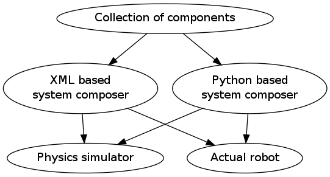

アーキテクチャ¶
hrpsys-baseは再利用可能なコンポーネントを多数収録するだけでなく、それらを接続しロボットアプリケーションを構築するための構築環境を提供します。また、構築したアプリケーションのテストに必要な物理シミュレーションも統合されています。
hrpsys-baseのアーキテクチャを以下に示します:

コンポーネント集はOpenRTM-aist (http://openrtm.org/) を使って実装されています（コンポーネント）。
XMLベースのシステム構築ツールはXML形式の設定ファイルによってシステムを構築し物理シミュレーションを実行します（シミュレータ）。
システム構築と物理シミュレーションの実行にはPythonスクリプトを使うこともできます（Pythonを使ったスクリプティング）。
物理シミュレーションはXMLベースのシステム構築ツールと統合されており、またPythonライブラリとして呼び出すこともできます。
In section 独自のロボットへの対応, method to apply to your own hardware is explained.